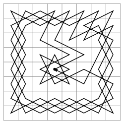
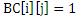
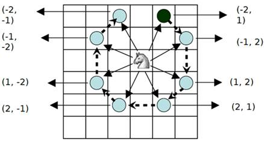
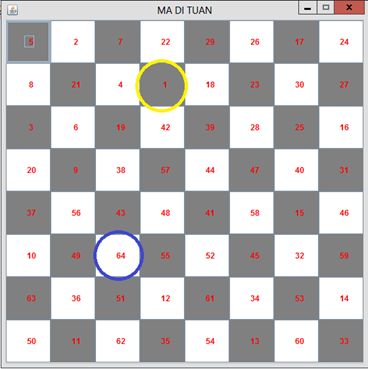

Bài toán mã đi tuần giải bằng phương pháp quay lui
(Knight’s tour)
Kim Đình Sơn, MSSV 20102089, CNTT 4, K55
Báo cáo Project1, ngành Khoa học máy tính
Viện công nghệ thông tin và truyền thông, Đại học Bách Khoa Hà Nội
1. Giới thiệu
Bài toán mã đi tuần hay hành trình của quân mã. Nội dung bài toán là tìm lời giải cho quân mã từ một ô bất nào đó của bàn cơ vua 8 x 8 sao cho nó đi qua lần lượt 64 ô mà mỗi ô chỉ qua một lần. Một hành trinh như vậy được gọi là hành trình đóng nếu sau khi xuất phát nó có thể quay trở lại ô ban đầu, và hành trình được gọi là mở nếu nó không thể trở về ô xuát phát. Bài toán có thể tổng quát lên với bàn cờ n x n và độ phức tạp lớn hơn. Dạng tổng quát của nó là bài toán tìm chu trình Hamilton trong lý thuyết đồ thị, thuộc dạng bài toán NP- đầy đủ. Với bài toán tìm hành trình đóng của quân mã là phát biểu cụ thể của bài toán tìm chu trình Hamilton.

Fig 1 Một hành trình đóng của bài toán mã đi tuần giải bởi The Turk
Ở đây, ta xét bài toán tìm các hành trình mở: tìm một đường đi cho quân mã sao cho từ một ô xuất phát ban đầu, nó đi lần lượt qua 64 ô bàn cờ, mỗi ô qua đúng 1 lần. Giải cụ thể với bàn cờ vua kích thước 8 x 8.
2. Thuật toán
Ta sử dụng phương pháp quay lui để giải bài toán trong trường hợp này. Bàn cờ được được biểu diễn bởi ma trận kích thước 8 x 8 BC[8][8]. Một ô cờ được cài đặt các trạng thái:
+ nếu ô ( i,j ) mã chưa đi qua
+ nếu ô ( i,j ) đã được đi qua ở bước thứ k.
+ nếu là ô xuất phát của quân mã
Đối với quân mã, có các khả năng lựa chọn sau:

Fig 2 Các khả năng lựa chọn cho nước đi tiếp theo của quân mã
Quân mã sẽ có 8 khả năng lựa chọn nước đi tiếp theo cho mình. Theo đó, nếu mã đi lên(xuống) 1(2) dòng, thì tọa độ trục tung giảm(tăng) 1(2), nếu mã đi sang trái(phải) 1(2) cột, thì tọa độ trục hoành giảm(tăng) 1(2). Khi đó ta khai báo một mảng lưu tạm hướng đi của quân mã,
private int Di[] = { 1, -1, -2, -2, -1, 1, 2, 2};
private int Dj[] = {-2, -2, -1, 1, 2, 2, 1, -1};
Để làm giảm bớt khả năng quay lui, ta lựa chọn những bước tiếp theo mà có số nước đi cao hơn, Thủ tục tìm nước đi tiếp theo cho quân mã với lựa chọn h (0<=h<8).
int TinhH(int d, int c)
1. int h=0
//Xet tren mang luu tam huong di cua quan ma
2. for int i=0 to 7 do
3. int row=d+Di[i];
4. int col=c+Dj[i];
//Neu vi tri ke tiep cua quan ma chua dươc di qua
5. if 0<=row<8 and 0<=col<8 and BC[row][col]=0 then
6. h++;
end if
end for
7. return h;
Thuật toán quay lui, sử dụng phép thử nước đi tiếp theo, nếu đi được tiếp ta tiếp tục thử những nước sau:
Try(i):
1. for int j=1 to k do
2. if (Xi chap nhan khang k) then
3. (Xac dinh kha nang k)
4. (Ghi nhan trang thai moi)
//Kiem tra dieu kien ket thuc
5. if i<n^2=64 then
6. Try(i+1);
7. else
8. (Ghi nhan nghiem)
9. (Tra lai trang thai ban dau)
end if
end for
Thủ tục mã đi tuần
int madituan(int d, int c)
1. buoc=1;// Xac dinh buoc di
2. BC[d][c]=buoc
3. while buoc<64 do
4. int min=8,viTriDong=-1,viTriCot=-1,h=0
5. for int i=0 to 7 do
6. int dt=d+Di[i]
7. int ct=c+Dj[i]
// Neu di tiep duoc
8. if 0<=dt<8 and 0<=ct<8 and BC[dt][ct]=0 then
// Chon nuoc di kha nang cao hon
9. h=TinhH(dt,ct);
10. if h<min then
11. min=h;
12. viTriDong=dt,viTriCot=ct;
13. end if
14. end if
15. end for
16. if viTriDong=-1 hoac viTriCot=-1
17. return -1
18. d=viTriDong;
19. c=viTriCot;
20. buoc++;// Tang chi so buoc di tiep theo
21. BC[d][c]=buoc;// Cap nhat trang thai cho o ban co (d,c)

Fig 3 Một lời giải sau khi áp dụng thuật toán quay lui
4. Tham khảo
|
[1] |
Lê Minh Hoàng, Bài giảng Chuyên đề, Bài toán Liệt kê |
|
[2] |
Sam Ganzfried, A Simple Algorithm For Knight’s Tours |
|
[3] |
http://en.wikipedia.org/wiki/Knight%27s_Tour#cite_note-7 |